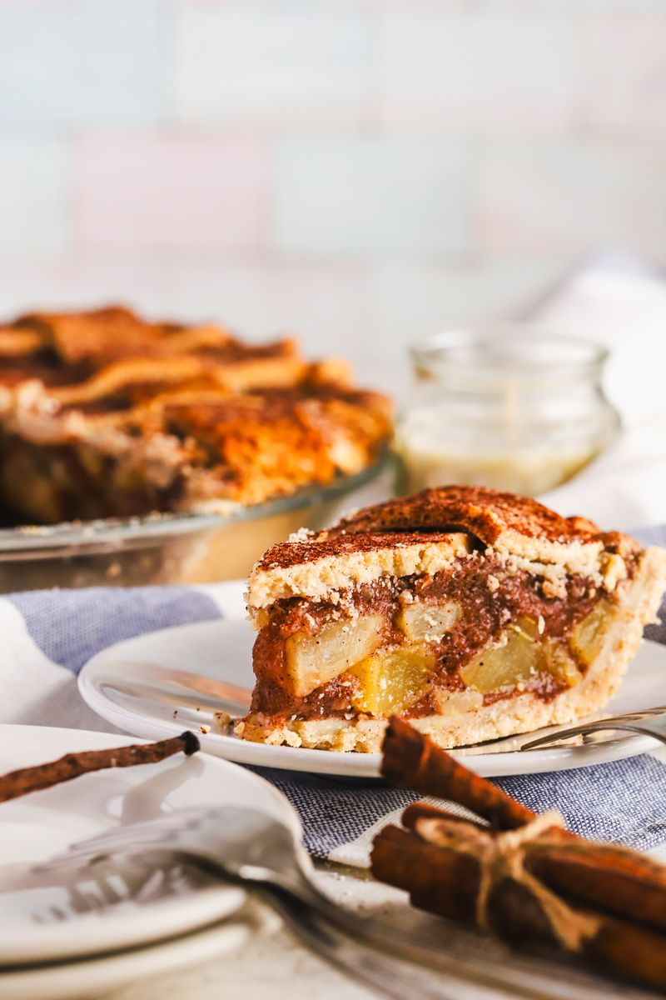
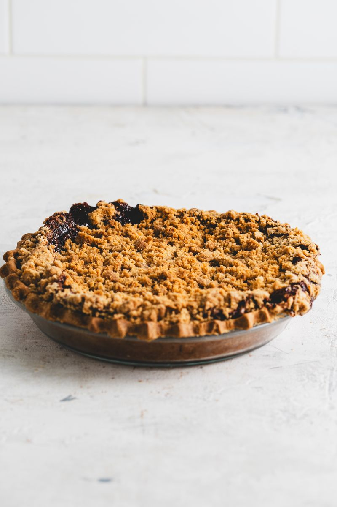
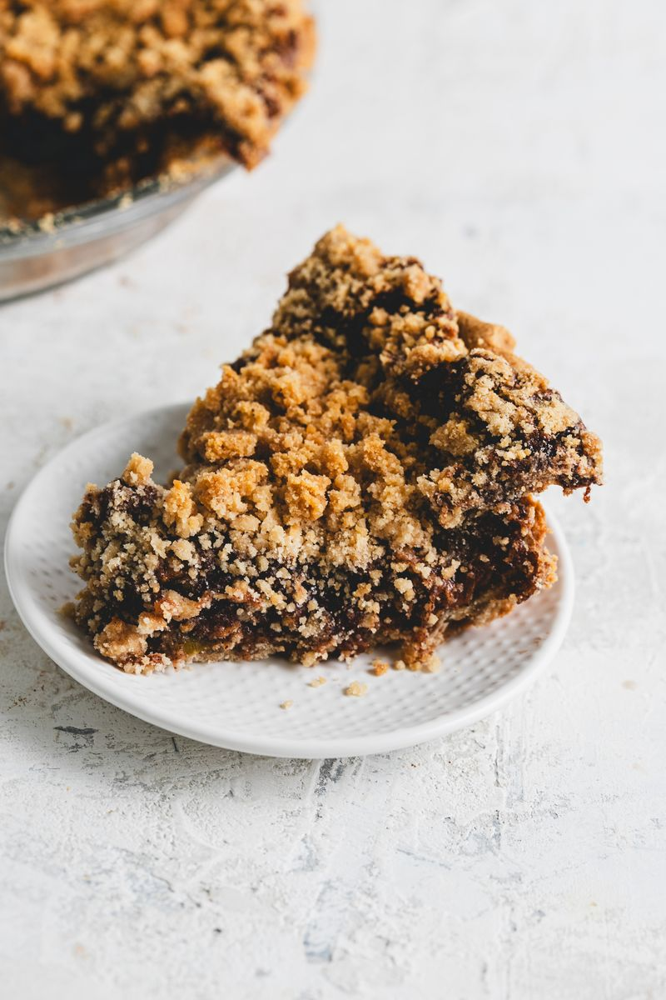
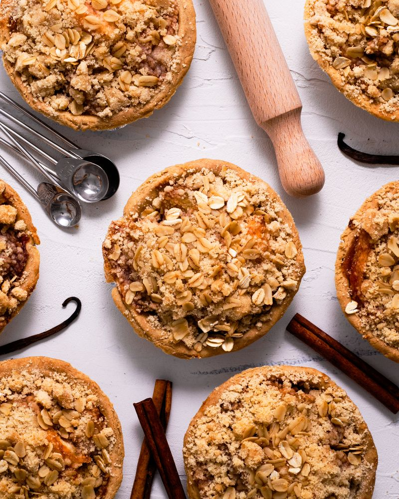
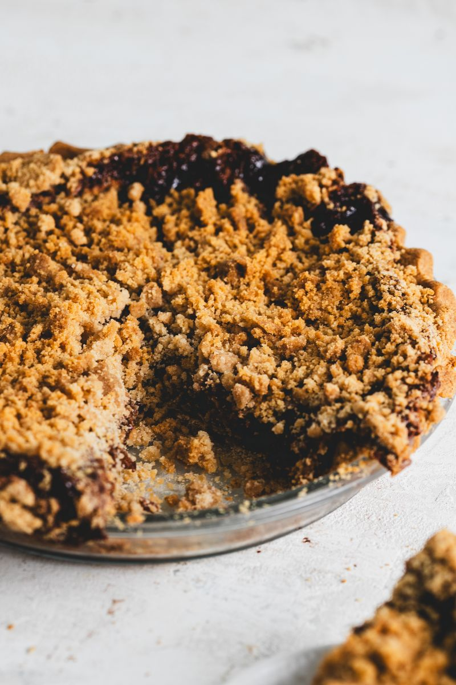

The Canned Apple Trick for a Pie That’s Never Soggy
Canned apples, sugar and lemon juice all bring extra liquid. Dry the apples in a low oven first and your crust stays crisp. Plus my full apple pie recipe.
Skip to recipe ↓- Drain the canned apples for 15 to 20 minutes.
- Spread them on a tray. One with holes is best, but a regular sheet pan works too.
- Dry them at 280 to 300°F for 20 to 30 minutes, depending on how hot your oven runs. You want the water gone, not the apples cooked.
- Watch for a skin. If the apples start forming a skin on top, you went too far.
I’ll say it: canned apples make the best apple pie. They’re consistent, they’re already tender, and you skip all that peeling. But they come with one problem, and it’s water. Nobody wants a soggy, wet apple pie, and that extra liquid is exactly what ruins a good crust.
Here’s the thing most people miss. It’s not only the apples. Sugar pulls water out of fruit and turns into syrup, and lemon juice is more liquid on top of that. Put all three together in a crust and you’ve built yourself a puddle. So before any of that goes in, we take some water out.

The trick: dry the apples in a low oven
This is what we’ve done at the bakery for years, and it works every single time.
- Drain them well. Pour the apples into a colander and let them sit for 15 to 20 minutes. A lot of liquid comes out on its own.
- Spread them out. Lay the slices in a single layer on a tray. A perforated pan (one with holes) is what we use, because air gets underneath. No tray with holes? That’s okay, a regular sheet pan works fine.
- Low and slow. Into the oven at 280 to 300°F for 20 to 30 minutes, depending on how hot your oven gets. That’s low enough to pull the moisture out without actually cooking the apples.
- Check the surface. They should look a little drier and feel tacky, not wet. If a skin starts forming on top, that’s your sign it went too far, so pull them.
- Cool, then season. Let them cool down, then toss with your sugar, spices, lemon and thickener and fill your pie like normal.

Why it works
Your thickener can only hold so much. When there’s less water to begin with, the corn starch actually sets the filling instead of fighting a flood. Less steam inside the pie means the bottom crust bakes instead of boils. And you get slices that hold their shape when you cut them, not soup running across the plate.
Want the bottom even crisper? Pair this with a few of my pie crust tricks, like baking on a hot sheet pan, or give the crust a quick par bake first.

My Apple Pie (Vegan & Gluten-Free)
Scale it in my app. Open this recipe in the recipe builder to make it bigger, smaller, or see the ratios.
Open in app →
Crust
| Ingredient | Weight |
|---|---|
| Gluten-free flour blend (my blend, or any all-purpose GF flour) | 308 g |
| Cold vegan butter, cubed | 113 g |
| Ice water | 146 g |
| Brown sugar | 30 g |
| Xanthan gum | ½ tsp |
| Salt | ½ tsp |
Filling
| Ingredient | Weight |
|---|---|
| Canned apple slices, drained and oven-dried (see the trick above) | 985 g |
| Brown sugar | 170 g |
| Cane sugar | 135 g |
| Corn starch | 55 g |
| Lemon juice | 1½ tbsp |
| Cinnamon | 2½ tbsp |
| Ground ginger | 1½ tsp |
| Nutmeg | ½ tsp |
| Salt | ½ tsp |
| Xanthan gum | ½ tsp |
Instructions
- Make the crust. Whisk the flour blend, brown sugar, xanthan and salt. Cut in the cold vegan butter until you have pea-sized bits. Add the ice water a little at a time, just until the dough holds. Split into two discs, one a bit bigger, wrap and chill 30 minutes.
- Dry the apples. Drain the canned apples for 15 to 20 minutes. Spread them on a tray (one with holes if you have it) and dry at 280 to 300°F for 20 to 30 minutes, until they look dry on the surface but haven’t formed a skin. Let them cool.
- Season the filling. Toss the cooled apples with both sugars, corn starch, cinnamon, ginger, nutmeg, salt, xanthan and lemon juice until every slice is coated.
- Fill. Roll the bigger disc to about 12 inches, line a 9-inch dish and pile in the apples, mounded a little in the center.
- Top it. Roll the second disc and cover the pie, or cut it into strips for a lattice. Trim, fold the edge under and crimp.
- Wash. Brush the top with a 1:1 maple syrup and olive oil wash and dust with cinnamon sugar. More options in my vegan egg wash replacements.
- Bake. 350°F for about 45 minutes, until the crust is deep golden and the filling bubbles. Tent the edges with foil if they brown early.
- Cool. Give it at least 2 to 3 hours before slicing so the filling sets.
Want the full write-up with the lattice step by step? It’s in my apple spice pie post.
Quick questions
- Canned apples or canned pie filling? Canned apple slices. Pie filling is already loaded with sugar and thickener, so you lose control of the texture.
- No tray with holes? No problem. A regular sheet pan works, just spread the apples in one layer.
- Does this work with fresh apples? Yes. Juicy apples throw off a lot of water too, so the same low oven trick helps.
Try it once and you won’t go back. This is the trick that gives you your best apple pie. Let me know how yours comes out.